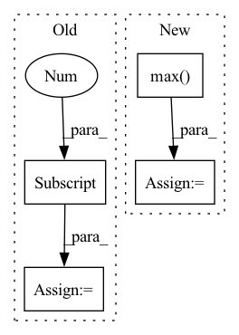

Pattern ID :37000
Before Change
image = ddpm(generator=generator, num_inference_steps=2, output_type="numpy").images
generator = torch.Generator(device=device).manual_seed(0)
image_from_tuple = ddpm(generator=generator, num_inference_steps=2, output_type="numpy", return_dict=False)[0]
image_slice = image[0, -3:, -3:, -1]
image_from_tuple_slice = image_from_tuple[0, -3:, -3:, -1]
After Change
expected_slice = np.array(
[1.000e00, 5.717e-01, 4.717e-01, 1.000e00, 0.000e00, 1.000e00, 3.000e-04, 0.000e00, 9.000e-04]
)
max_diff = np.abs(image_slice.flatten() - expected_slice).max()
self.assertLessEqual(max_diff, 1e-3)
@slowIn pattern: SUPERPATTERN
Frequency: 5
Non-data size: 4
Instances Fragment ID: 105252898
Project Name: huggingface/diffusers
Commit Name: 02d83c9ff1b93f2c6f9c94f9369b3e4bc1ba8ce7
Time: 2022-12-06
Author: anton@huggingface.co
File Name: tests/pipelines/ddim/test_ddim.py
M Class Name: DDIMPipelineFastTests
N Class Name: DDIMPipelineFastTests
M Method Name: test_inference(1)
N Method Name: test_inference(1)
M Parent Class: unittest.TestCase,PipelineTesterMixin
N Parent Class: unittest.TestCase,PipelineTesterMixin
M File Name: tests/pipelines/ddim/test_ddim.py
N File Name: tests/pipelines/ddim/test_ddim.py
M Start Line: 46
M End Line: 68
N Start Line: 61
N End Line: 77
Before Change
// 找到每一个真实框对应的先验框最大的iou
gt_max_ious = ious[gt_argmax_ious, np.arange(ious.shape[1])]
// 每一个真实框对应的最大的先验框的序号
gt_argmax_ious = np.where(ious == gt_max_ious)[0]
return argmax_ious, max_ious, gt_argmax_ious
After Change
//---------------------------------------------------------//
// 找出每一个先验框最对应的真实框的iou [num_anchors, ]
//---------------------------------------------------------//
max_ious = np.max( ious, axis=1)
//---------------------------------------------------------//
// 获得每一个真实框最对应的先验框 [num_gt, ]
Fragment ID: 105252897
Project Name: bubbliiiing/faster-rcnn-pytorch
Commit Name: d456f02a402fd8cf8db1d991aa612439b3c0ffb2
Time: 2021-01-30
Author: 47347516+bubbliiiing@users.noreply.github.com
File Name: utils/utils.py
M Class Name: AnchorTargetCreator
N Class Name: AnchorTargetCreator
M Method Name: _calc_ious(3)
N Method Name: _calc_ious(3)
M Parent Class: object
N Parent Class: object
M File Name: utils/utils.py
N File Name: utils/utils.py
M Start Line: 255
M End Line: 265
N Start Line: 157
N End Line: 181
Before Change
else:
// Assume that the person is centerered in the image
height = img_for_crop.shape[0]
width = img_for_crop.shape[1]
center = np.array([width // 2, height // 2])
scale = max(height, width) / 180
After Change
detector.eval()
predictions = detector(
[torch.from_numpy(img_for_crop).permute(2, 0, 1) / 255.])[0]
human_ids = torch.logical_and(
predictions["labels"] == 1,
predictions["scores"] == predictions["scores"].max() ).nonzero().squeeze(1)
bbox = predictions["boxes"][human_ids, :].flatten().detach().cpu().numpy()
width = bbox[2] - bbox[0] Fragment ID: 105252856
Project Name: yuliangxiu/icon
Commit Name: 2117636e701293c457554812067b272fcf3f8252
Time: 2022-10-10
Author: yuliang.xiu@tuebingen.mpg.de
File Name: lib/pymaf/utils/imutils.py
M Class Name: AnonimousClass
N Class Name: AnonimousClass
M Method Name: process_image(5)
N Method Name: process_image(6)
M Parent Class:
N Parent Class:
M File Name: lib/pymaf/utils/imutils.py
N File Name: lib/pymaf/utils/imutils.py
M Start Line: 91
M End Line: 132
N Start Line: 111
N End Line: 128
Before Change
sigma: float =2.0,
) -> None:
Classify to regress and regress to classify, Mutual Match for label assignement
num_obj = truths.size()[0]
reg_overlaps = jaccard(truths, decode(regress, priors))
pred_classifs = jaccard(truths, point_form(priors))
classif = classif.sigmoid().t()[labels - 1, :]
// pred_classifs = pred_classifs ** ((sigma - classif + 1e-6) / sigma)After Change
num_pos = min(num_pos, (quality > 0).sum())
pos_mask = torch.topk(quality, num_pos, largest=True)[1]
quality[pos_mask] += 3.0
(best_truth_overlap, best_truth_idx) = qualities.max(dim=0)
overlap_t[idx] = best_truth_overlap
conf_t[idx] = labels[best_truth_idx]
//// for regression ////// Fragment ID: 105252904
Project Name: zhangheng19931123/mutualguide
Commit Name: e34b6b0002f1571fad0fa9bf00707f377f5fc431
Time: 2022-07-01
Author: zhanghengdev@outlook.com
File Name: utils/box/box_utils.py
M Class Name: AnonimousClass
N Class Name: AnonimousClass
M Method Name: mutual_match(12)
N Method Name: mutual_match(12)
M Parent Class:
N Parent Class:
M File Name: utils/box/box_utils.py
N File Name: utils/box/box_utils.py
M Start Line: 79
M End Line: 99
N Start Line: 97
N End Line: 118